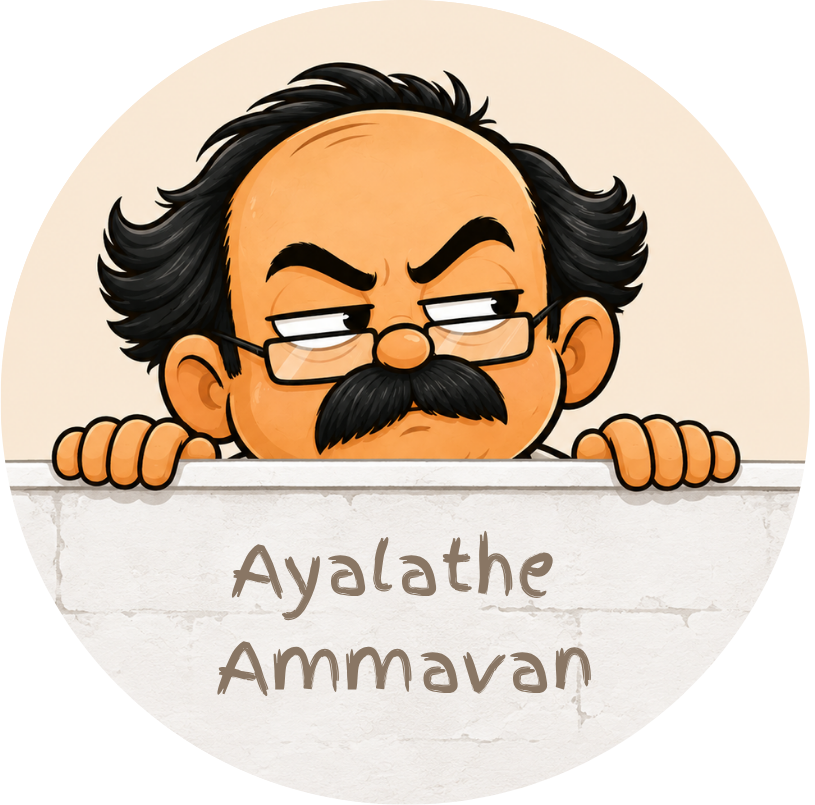

Welcome to the domain of Badai Bhaskar—the self-proclaimed legend who studied under three streetlights at once. He keeps a watchful eye on your posture, smartphone habits, and life choices in real time.